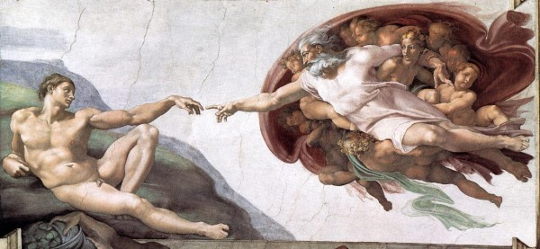
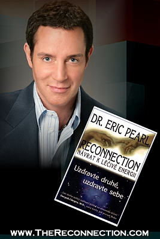

Reconnection®

Obnova napojení
The Reconnection® je obnova napojení jedince na energetickou møí�ku planety a vesmíru dle prvotního vzoru, pomocí velmi vysokıch frekvencí svìtla, které jsou nyní na planetì dostupné pravdìpodobnì vùbec poprvé. U mnoha lidí má toto napojení za následek razantní zlepšení zdravotního stavu. |
Autor této metody, americkı chiropraktik a špièka ve svém oboru - Dr. Eric Pearl, ve své kní�ce øíká: |
"Kdy� dnes vaši pacienti vnímají nìco, co nikdo jinı nevnímá, vy víte, �e je vedete na novou transsenzorickou úroveò existence. Pøinášíte svìtlo a informace na tuto planetu - a tam kde je svìtlo, nemù�e bıt tma. Skrze toto svìtlo a informace pøicházejí transformace a uzdravení." Bìhem Reconnection dochází k nastartování procesu napojování se na vesmír, co� dovoluje Rekonektivnímu léèení zaujmout své místo. Tyto frekvence svìtla obsahují nové informace, díky nim� jsme schopni komunikovat s novımi úrovnìmi svìtla a jsme schopni se znovu napojit na zdroj. |
V knize Dr. Erica Pearla najdete nìkolikrát popis této metody: |
"To co dìláte, znovu spojuje vlákna." "To co dìláte, znovu spojuje øetìzce." Bìhem léèení dochází k napojování vláken DNA, co� jsou nositelé informací uvnitø lidského tìla. A pravdìpodobnì fungují té� jako anténky pro pøíjem, jenom musí bıt správnì pozapojované. Øìtìzci jsou zde mínìny základní stavební kameny hmoty tak, jak je chápe teorie øetìzcù, tedy jako smyèky enerií, které vibrují rùznımi frekvencemi, a tato frekvence urèuje jejich formu. To je tedy to tajemství, které vás propojí s vesmírem a umo�ní vám pøístup k mnoha dalším informacím, které budete potøebovat, abyste si byli schopni vylepšit svoji tìlesnou schránku, i se rozvíjet správnım smìrem. Rekonektivní léèení se dá chápat jako zastøešující metoda všech mo�nıch léèitelskıch smìrù, nebo� vás propojí s vaší prvotní a dokonalou pøedstavou vás samıch. |
Samotné rekonektivní léèení trvá okolo 45 minut, ale vaše propojování bude pokraèovat i kdy� pùjdete domù. Mù�ete se rozhodnout, kolik sezení budete chtít absolvovat a do jaké míry se v tìchto novıch energiích vykoupat. Obvyklı poèet sezení je jedno a� tøi na danou zále�itost, kvùli které jste se pro léèení rozhodli. Samotné reconnectivní léèení je vlastnì jakási bezkontaktní energetická masá� na lehátku nebo vsedì a vıslednı efekt se projeví tam, kde ho tìlo momentálnì nejvíce potøebuje. Dochází pøi nìm pravdìpodobnì k napojování vaší DNA na svìtlo a léèení je vlastnì jakımsi vedlejším efektem. Nejprve si chvíli popovídáme, pak si lehnete a uvolníte se, zatímco na vás budu pùsobit, a pak si opìt popovídáme. Tato energie je velice inteligentní a proto jí bìhem sezení nijak neusmìròujeme a ona sama koná zázraky. Nemohu vám slíbit, �e se uzdravíte, nebo �e zmizí problém, kvùli kterému jste pøišli. Nemohu znát opravdovou pøíèinu vaší nemoci, to bychom ji museli zaèít zkoumat napøíklad pomocí metody SRT (ale to je zase o nìèem jiném). Na druhou stranu vím jednu vìc jistì - ke zlepšení stavu dojde u ka�dého. Jenom obèas nìkde úplnì jinde, ne� jsme chtìli, oèekávali nebo tušili. Mo�ná se díky léèení zmìní od základù celı váš �ivot. Co se bìhem léèení dìje, to vám asi nikdo nevysvìtlí a nejspíš to ani nikdo neví. Je to jednoduché a krásné, jako vše dokonalé. Pokud máte o léèení zájem, vyhraïte si na sezení asi jednu hodinu. Za jedno sezení zaplatíte 1000,- Kè |
Reconnection je metoda komplexního napojení vašich energetickıch uzlù na energetické proudy vesmíru. Probíhá ve dvou sezeních, která jsou rozdìlena do dvou po sobì následujících dnù anebo obden. Ka�dé sezení trvá okolo 45 minut. Celı proces je bezdotykovı a probíhá podobnì jako rekonektivní léèení. K popsání rozdílu mezi léèením a Reconnection bych pou�il pøirovnání s poèítaèem. Zatímco v prvním pøípadì se pøipojíte na internet na chvíli dostateènou k tomu, aby si váš software stáhl aktualizace, v druhém pøípadì dojde k trvalému širokopásmovému pøipojení do svìtové sítì.. Bìhem sezení mù�ete vnímat rùzné pocity, vlny energie proudící celım tìlem, vidìt barvy a cítit vùnì. Mù�ete mít pocit, �e nejsme v místnosti sami. Také se mù�e ozvat vaše tìlo a vy mù�ete vnímat velice reálné fyzické pocity a uvìdomovat si, kde je v tìle nìjakı problém. Všichni, kteøí si svım Reconnection prošli, pøiznávají velké pozitivní zmìny v �ivotì. Souèasnì je však Reconnection silnım individuálním zá�itkem a ka�dı z nás ho pro�ívá svım ú�asnım a jedineènım zpùsobem. A opìt se vám pøihodí to, co je pro vás momentálnì nejdùle�itìjší. U mì to napøíklad místo léèení nastartovalo velmi vıraznı nárùst vibraèní úrovnì.. Za vaše osobní Reconnection zaplatíte ekvivalent $333, jako kdekoli jinde. |
Eric Pearl popsal své zkušenosti ve velmi ètivé knize:
 |
Ukázky z knihy a dalších materiálù: |
|
Kontaktní adresa: Ing. Vratislav Kašpárek 561 01 Hnátnice 13 Èeská Republika Tel: +420 773 515 917 GPS: 50°1'22.22"N; 16°26'7.35"E |

Pošlete mi váš po�adavek na zamluvení termínu sezení na nebo mi pošlete vzkaz z kontaktem ní�e uvedenım formuláøem nebo mi jednoduše zavolejte. |
|
Fotogalerie: Klepnutím na obrázek jej zvìtšíte.
|
|
|
)
)
){kind=link}
){kind=link}
){kind=link}
){kind=link}